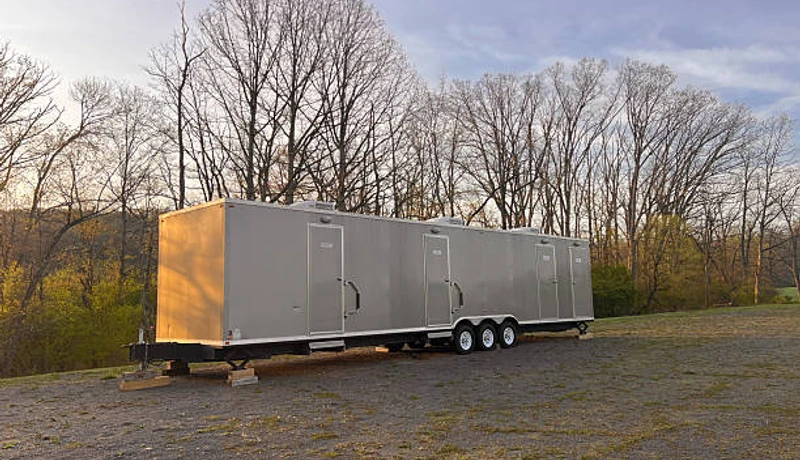

Event Planning
Porta Potty Guide for South Shore Festivals
Hosting an event in Bay Shore or Sayville during peak season? Learn exactly how many portable restrooms you need to keep guests happy and lines short.
Whether you need porta potties for a home renovation in Islip, a neighborhood HOA event in Suffolk County, or a residential construction project near Long Island MacArthur Airport, FixPilot is Islip's trusted local provider. Clean units, transparent pricing, and same-day delivery — no automated phone trees, just fast friendly local service.
Bypass automated systems. Speak directly to our local dispatch team in Suffolk County right now to secure units for your site.
No forms. No callbacks. Talk to a real dispatcher right now and lock in delivery.
Not sure how many units? Use our free porta potty calculator.
From West Islip down to Ronkonkoma, our local fleet ensures rapid delivery to any hamlet.
Every single unit goes through a rigorous multi-point sanitization process before delivery.
Whether you need one unit for a remodel or 100 for a marina festival, we have the stock.
We carry comprehensive liability insurance and ensure your site meets NYS and OSHA health regulations.
From routine Suffolk County construction porta potties to luxury restroom trailers for Islip weddings and neighborhood events in Islip, FixPilot brings the full spectrum of portable sanitation to your door. No job too small, no event too big — same-day delivery throughout Suffolk County and beyond.

OSHA-certified portable restrooms for Islip and Bay Shore construction in Suffolk County. Worker-to-toilet ratio documentation included with every Islip order. Weekly servicing on your Suffolk County job site schedule.

Climate-controlled luxury trailers for Islip weddings and Long Island MacArthur Airport-area events in Suffolk County. Flushing toilets, running water, and premium finishes — guests never guess they're in a trailer.

Affordable standard porta potties for Suffolk County construction crews and Islip community events. Reliable, clean, on-time — serving Islip, Bay Shore, and Central Islip daily.

ADA-accessible porta potties for Islip permitted events and Suffolk County job sites. Meets ANSI A117.1 accessibility requirements for Central Islip public venues and Islip construction.

Portable hand wash stations for Islip construction in Islip and Bay Shore. OSHA-required within 100 feet of job site restrooms in Suffolk County. Available as add-on to any Islip order.

Premium flushable units for Suffolk County outdoor events: real flushing action, fresh water, mirror, interior lighting. Popular for Islip events in Central Islip and near Robert Moses State Park where standard units fall short.

Climate-controlled event trailers for Islip festivals and Long Island MacArthur Airport-area gatherings in Suffolk County. Multiple stall configurations for crowds from 100 to 5,000+ at Islip venues.

Designed specifically for multi-story commercial developments in the Hauppauge or Ronkonkoma areas. These units feature integrated, heavy-duty steel slings allowing your crane operator to safely hoist sanitation directly to elevated floors, saving time and maximizing site efficiency.

Five-star mobile restroom experience for Islip black-tie events near Long Island MacArthur Airport. Premium flooring, fixtures, and lighting make this the obvious choice for Islip and Bay Shore upscale events.

Deluxe units for Suffolk County events and longer rentals: interior lighting, better ventilation, larger capacity. Popular for Islip and Bay Shore gatherings where standard units won't do.

Portable septic pumping for Suffolk County residential properties, Islip event sites, and Central Islip construction projects. Same-day emergency service — call (833) 652-9344.

Same-day emergency rentals for Islip — available 24/7 for Islip, Bay Shore, and all of Suffolk County. Call (833) 652-9344 any time; our Islip dispatcher answers live and confirms delivery.
We believe in transparent, upfront pricing with zero hidden fees. While exact costs fluctuate based on inventory and season, your rental price is determined by three main factors:
A standard event unit is our most affordable option, while multi-stall luxury trailers command a premium. Bulk orders for large sites in Suffolk County receive scaled pricing.
Event units are typically billed on a flat weekend rate. Construction rentals in Islip are billed on a recurring 28-day cycle.
One cleaning per week is standard. For high-traffic sites where adding more units isn't physically possible, we can schedule twice-weekly pumping.
Want an exact number for your project?
Call our local dispatchers. It takes less than 2 minutes to get a binding quote.
Call →
Different projects require vastly different sanitation logistics. We have the specialized experience to support the diverse needs of the Town of Islip and greater Suffolk County.
From ground-up builds in the Hauppauge Industrial Park to infrastructure repairs, we deliver high-volume, rugged sanitation with reliable weekly pumping.
Summer festivals, fishing tournaments, and Fire Island ferry staging. We handle mass crowd calculations, ADA compliance, and rapid load-in logistics.
Clean, unobtrusive units placed carefully to avoid damage to driveways or historic homes in West Islip and Sayville.
Discreet, VIP mobile restrooms for premium South Shore outdoor events. Climate-controlled luxury that guarantees your guests feel completely comfortable.
The biggest fear of renting a porta potty is the mess. We eliminate that completely. Whether it's the initial delivery or a routine weekly service, our Islip technicians follow a strict 4-point protocol to ensure every unit is hospital-grade clean.
Using high-powered vacuum trucks, we completely pump out all waste and transport it to approved Suffolk County wastewater treatment facilities.
All interior surfaces—walls, floors, urinals, and seats—are cleared of debris and vigorously scrubbed to remove dirt, mud, and grime.
We apply industrial-grade disinfectants to kill 99.9% of bacteria. We then recharge the tank with a fresh blue deodorizing solution to combat the heat.
We fully replenish all consumables, including high-capacity 2-ply toilet paper rolls and hand sanitizer dispensers, ensuring the unit is ready for use.
Islip is a dynamic Suffolk County community where construction activity, outdoor events, and residential growth create year-round demand for reliable portable sanitation. From the corridors near Long Island MacArthur Airport to the neighborhoods of Islip, Bay Shore, and Central Islip, every part of Suffolk County has a reason to call FixPilot — construction sites, events, or emergency backup near Robert Moses State Park.
Our Islip depot enables rapid same-day delivery to Islip and all of Suffolk County.
Construction and event delivery to Bay Shore — same-day available throughout Suffolk County.
Serving Central Islip residential and commercial projects with OSHA-certified units.
Luxury restroom trailers and standard units for events and construction in Brentwood.
Same-day delivery to West Islip and all surrounding Suffolk County communities.
Serving contractors and event planners in East Islip and throughout Suffolk County.
Reliable porta potty service to Bohemia, Islip, and all of Suffolk County.
We also provide fast, reliable service to contractors and residents in these nearby Suffolk County communities:
*Prices may vary by duration and location in Suffolk County. Call for exact quote.
Get Your Free Islip Quote2026 Rental Cost Guide
Standard, deluxe & luxury pricing explained
How Many Units Do You Need?
Calculate the right number for your event or site
OSHA Compliance Guide
Requirements for construction sites
Construction Site Services
OSHA-compliant units for job sites
Luxury Restroom Trailers
VIP-grade trailers for weddings & events
Free Quote Calculator
Get an instant estimate in 60 seconds
Islip's Suffolk County portable sanitation market spans construction corridors, event venues, and a residential base that keeps our Islip fleet active year-round. The Islip and Bay Shore zones carry the heaviest construction load — commercial mixed-use developments, residential subdivisions extending into Central Islip and Brentwood, and infrastructure projects throughout Suffolk County. FixPilot serves Suffolk County construction job sites with OSHA-certified units delivered on schedule to every active project.
The event circuit near Robert Moses State Park and throughout Suffolk County generates premium sanitation demand from Islip's outdoor wedding market, corporate event producers, and public festival organizers. Venues in Islip, private estates in Bay Shore, and outdoor spaces near Long Island MacArthur Airport book luxury restroom trailers as standard equipment — facilities that match Islip's growing expectation for event-quality restrooms. Our Suffolk County luxury trailer inventory is sized for Islip's event volume, not just the peak weekends.
Central Islip, Brentwood, and West Islip contribute the residential layer beneath Islip's commercial and event markets. Homeowners in these Suffolk County neighborhoods managing renovations, contractors building new Islip subdivisions, and small event organizers running community gatherings near Robert Moses State Park make up the steady background demand. FixPilot's Islip depot is sized for this full spectrum — same-day delivery to Islip construction, weekend luxury trailer service at Bay Shore weddings, and weekday residential rentals in Brentwood and West Islip.
Islip's Islip County construction market is driven primarily by residential construction, community events, and commercial development centered around Islip Convention Center and extending throughout the Downtown Islip and North Islip development corridors. Active job sites in South Islip and Islip Heights keep a consistent contractor workforce active in Islip County year-round, generating steady demand for OSHA-compliant portable restrooms with documented weekly service schedules. FixPilot maintains dedicated Islip County inventory to serve same-day construction deliveries to Downtown Islip, North Islip, and every active construction zone in the Islip metro. The Islip Convention Center corridor represents the highest-demand construction zone in Islip County, where projects range from commercial mixed-use development to infrastructure upgrades along the Islip Park perimeter.
Islip's event market is anchored by annual gatherings near Islip Fairgrounds and throughout the Downtown Islip and South Islip entertainment corridors in Islip County. The seasonal event calendar — outdoor concerts, community festivals, weddings at venues near Islip Convention Center, and Islip County civic gatherings — creates consistent premium portable sanitation demand from spring through fall. Luxury restroom trailers for upscale North Islip and Islip Heights event venues, standard units for large Islip County community gatherings, and ADA-compliant options for public events near Islip Fairgrounds are all part of FixPilot's Islip event service offering. The growing outdoor wedding venue market in Islip Park and South Islip reflects Islip's emergence as a destination for outdoor celebrations throughout Islip County.
Contractors working in Downtown Islip, event planners organizing gatherings near Islip Fairgrounds, and homeowners in Islip Heights and Islip Park managing Islip renovation projects choose FixPilot over competitors because our Islip County-based operation delivers local expertise that national vendors cannot provide. We know the delivery windows, access requirements, and permit procedures for construction sites near Islip Convention Center and throughout the North Islip development corridor. Our Islip County dispatch team answers every call — no automated systems, no call centers routing your Islip order through another state. Same-day delivery is standard, not a premium, for all of Islip County.
Guides for event planning and construction compliance in Suffolk County.
Hosting an event in Bay Shore or Sayville during peak season? Learn exactly how many portable restrooms you need to keep guests happy and lines short.

Keep your Islip construction site compliant. We break down the exact NYS and OSHA requirements for portable sanitation and hand wash stations on commercial sites.

Planning an outdoor wedding in Oakdale? See why luxury trailers provide the ultimate comfort and save your guests from walking to distant facilities.
Porta Potty Rental in Long Island
Learn More →Porta Potty Rental in Babylon Town
Learn More →Porta Potty Rental in Oyster Bay
Learn More →Porta Potty Rental in Hempstead Town
Learn More →Porta Potty Rental in Long Island
Learn More →Porta Potty Rental in Babylon Town
Learn More →Porta Potty Rental in Oyster Bay
Learn More →Porta Potty Rental in Hempstead Town
Learn More →Real feedback from contractors, homeowners, and event planners across the Town of Islip.
"Managing a massive warehouse build in the Hauppauge Industrial Park. Islip Sanitation & Rentals provided exactly what we needed. Their weekly servicing is like clockwork, never missing a beat."
Anthony V.
Contractor
"We hosted a beautiful waterfront event in Oakdale and rented their luxury restroom trailer. It was completely spotless, perfectly air-conditioned, and our guests couldn't stop complimenting it."
Michelle D.
Bride
"Had an emergency plumbing issue at our restaurant in Bay Shore on a Friday night. They had porta potties delivered to our lot within hours. Absolute professionals."
Kevin S.
Restaurant Owner
Real answers for Islip customers. More questions? Call (833) 652-9344 anytime.
We offer same-day delivery throughout Islip and Suffolk County. Orders placed before 10 AM in Islip typically arrive by early afternoon. Our Suffolk County fleet covers Islip, Bay Shore, Central Islip, and every active construction site and event venue in Islip. For urgent needs in Brentwood or near Long Island MacArthur Airport, call (833) 652-9344 any time — a real Islip-area dispatcher answers.
Yes — Islip, Bay Shore, Central Islip, Brentwood, West Islip, and the full extent of Suffolk County are on our regular delivery routes. Our Islip drivers run these neighborhoods daily and can confirm same-day availability for any address in Suffolk County. Call (833) 652-9344 for immediate confirmation.
All FixPilot units at Islip job sites meet OSHA 29 CFR 1926.51 — one unit per 20 workers per 8-hour shift, positioned within 600 feet of the work area, serviced on schedule. We deliver an OSHA compliance spec sheet with every Suffolk County construction order. Your Islip or Bay Shore job site will pass inspection without scrambling for paperwork.
In Suffolk County, standard porta potties run $75–100/day with weekly service. Upgraded deluxe units are $100–150/day. ADA-compliant units for Islip public events cost $120–160/day. Luxury restroom trailers for events near Long Island MacArthur Airport or Robert Moses State Park start at $400/day. Multi-week Suffolk County construction contracts qualify for volume discounts. Call (833) 652-9344 for a precise Islip project quote.
National chains route Suffolk County orders through centralized dispatch — meaning the person confirming your Islip delivery has never driven Islip or navigated Bay Shore's access restrictions. FixPilot has its own drivers in Suffolk County who run Islip routes daily. Our units leave our Suffolk County facility clean and arrive on time. That local difference shows in every delivery, every week.
Yes — neighborhood block parties, HOA events, school carnivals, and community festivals in Islip, Bay Shore, Central Islip, Brentwood, and West Islip are regular orders for our Islip team. No minimum order size, no event-planning complexity. One call to (833) 652-9344 and your Suffolk County community event has clean, properly maintained portable restrooms delivered and retrieved on your schedule.
Yes — homeowner rentals in Islip are one of our most common orders. A single standard unit placed on your Islip or Bay Shore driveway keeps your construction crew out of your home's bathrooms during kitchen remodels, bathroom renovations, or additions in Suffolk County. Minimum one week; most Islip homeowners rent 3–6 weeks. Same-day delivery available throughout Suffolk County.
For private property in Islip — Islip driveways, Bay Shore yards, fenced Suffolk County construction sites — no permit is required. For placement on public Islip streets, Central Islip sidewalks, or Suffolk County park property, a right-of-way permit from Islip Public Works is required (typically 3–7 days). We guide Suffolk County homeowners and contractors through the process.
For Islip neighborhood events in Islip, Bay Shore, and throughout Suffolk County, standard porta potties work well for casual gatherings of up to 200 people. Deluxe units with interior lighting and improved ventilation are a step up for Central Islip and Brentwood HOA events and outdoor fundraisers. Our Suffolk County team recommends the right unit count based on your Islip event's expected attendance.
Extensions for Suffolk County rentals are simple — just call (833) 652-9344 and we'll add days or weeks with no penalty. Our Islip service team continues weekly pump-outs at the same rate, and you're billed only for the additional time. We've extended Islip and Bay Shore construction rentals from 2 weeks to 6 months without any contract complication.
Yes — projects and events near Long Island MacArthur Airport are among our most regular Suffolk County deliveries. Our Islip drivers know the delivery windows, vehicle access requirements, and site coordination protocols for the Long Island MacArthur Airport area. Same-day delivery is standard for Suffolk County locations near Long Island MacArthur Airport across Islip and Bay Shore. Call (833) 652-9344 for immediate availability confirmation.
Robert Moses State Park and the surrounding Central Islip corridor are a regular part of our Islip service calendar. We've provided construction porta potties and luxury restroom trailers for events ranging from small private gatherings to large public events near Robert Moses State Park in Suffolk County. Delivery timing, access coordination, and permit guidance for Robert Moses State Park-area projects are handled by our Islip team.
Our Islip emergency line (833) 652-9344 is answered live 24/7 — including nights, weekends, and holidays. Our Suffolk County on-call driver covers Islip, Bay Shore, Central Islip, and the full Islip metro for after-hours emergencies. Whether it's a Long Island MacArthur Airport-area construction inspection failure or a last-minute event backup in Brentwood, we dispatch immediately with no premium for after-hours service.